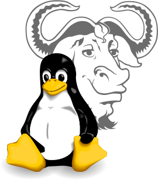

Qué es el software libre
El concepto de software libre lo formuló el programador Richard Stallman, que en 1983 puso en marcha el Proyecto GNU y en 1985 creó la Fundación para el Software Libre (Free Software Foundation, FSF). Desde entonces es uno de los principales defensores de los programas libres.
En la web de la FSF se encuentra una definición de lo que es el software libre:
«Software libre» es el software que respeta la libertad de los usuarios y la comunidad. A grandes rasgos, significa que los usuarios tienen la libertad de ejecutar, copiar, distribuir, estudiar, modificar y mejorar el software. Es decir, el «software libre» es una cuestión de libertad, no de precio.
Free Software Foundation
Un programa libre es aquel que se puede prestar libremente a las amistades, del que se pueden tener copias en todos los ordenadores y que, con los conocimientos necesarios, se puede modificar para adaptarlo a las propias necesidades. Esto se concreta en las llamadas cuatro libertades del software, principios que deben respetar quienes crean, mantienen y distribuyen los programas, porque determinan lo que los usuarios pueden hacer o no con ellos. Son las siguientes:

Para los usuarios de a pie, que saben poco o nada de programación, probablemente las más interesantes sean las libertades 0 y 2. La libertad 0 permite usar el programa con cualquier propósito y en tantos ordenadores como se quiera, algo que, salvo raras excepciones, no se puede hacer con los programas que no son libres, que suelen limitar el número de instalaciones. Esto, que puede parecer trivial (¿para qué ejecutar dos o más copias de un programa si solo se puede trabajar en uno al mismo tiempo?), adquiere una gran importancia en el mundo educativo. Cuando se adquiere un programa para el alumnado, lo habitual es tener que comprar múltiples licencias de uso, una por cada ordenador donde vaya a instalarse o, dependiendo del tipo de programa, por cada escolar que lo vaya a utilizar. Sin embargo, si en clase se trabaja con gráficos, por poner un ejemplo, hay docenas de programas libres excelentes, como GIMP, que el alumnado puede descargar y usar tanto en el centro educativo como en casa.
Esto último lleva a la libertad 2, ya que los programas libres también se pueden ceder a otras personas para que hagan copias y los utilicen por su cuenta. Lógicamente, un centro educativo tiene que tender al uso de este tipo de programas y no solo porque económicamente sea más rentable sino, sobre todo, porque es una de las mejores formas de poner en práctica valores como la solidaridad, el compañerismo o el altruismo.
Hasta hace poco, la libertad 1, la de estudiar cómo funciona un programa y cambiarlo, parecía reservada a quienes sabían programar. La inteligencia artificial ha cambiado esta situación con lo que se conoce como vibe coding: cualquier docente puede describir con sus propias palabras lo que necesita y conseguir que un asistente de IA cree una aplicación o modifique el código de otra ya existente. De este modo, un programa libre se puede adaptar a las necesidades de un aula o de un centro sin saber programar, algo que no es posible con un programa propietario, cuyo código no está disponible. La comunidad Vibe Coding Educativo ofrece muchos ejemplos, como el de un docente que adaptó para su centro una aplicación de formulación química publicada con licencia abierta, sin necesidad de pedir permiso a su autor. Esta nueva forma de crear programas se trata con más detalle en «Crear aplicaciones propias con IA».
Estrategias en la escuela
- Debe fomentarse la programación informática como un medio privilegiado para la interiorización de la importancia del software libre, ya que se pasa a formar parte de ese conjunto de personas capaces de comprender los programas y, por lo tanto, con capacidad para ejercer la libertad 1. Además, la programación permite y potencia el desarrollo de la lógica y el pensamiento crítico, ambos necesarios para ser personas libres. El pensamiento computacional es una habilidad fundamental para desarrollar una vida plena en la era digital actual.
- Las libertades 1, 2 y 3 tienen una aplicación directa en la educación, más allá de los programas. Debe fomentarse la ayuda mutua entre el alumnado. Por ejemplo, algo muy sencillo de hacer cuando se mandan trabajos en clase para hacer de forma autónoma es permitir que quienes terminan antes ayuden a quienes van más despacio o tienen dificultades, explicándoles que ayudar no consiste en hacer el trabajo por otra persona ni en darle las soluciones, sino en guiarla hacia sus objetivos, igual que el docente ha hecho antes con el grupo cuando ha tenido dificultades.
La Free Software Foundation
Esta fundación la creó Richard Stallman en 1985 para apoyar los programas libres y, desde entonces, aboga por su generalización y popularización.
Según explica en su propia página, la FSF se ocupa, entre otras cosas, de:
- Patrocinar el Proyecto GNU, que desarrolla un sistema operativo completo formado por software libre, y mantener la infraestructura que usan sus programadores.
- Mantener la definición de software libre, que establece qué debe cumplir un programa para considerarse libre.
- Publicar las licencias GNU, como la GPL, la licencia de software libre más extendida, y velar por su cumplimiento a través de su Laboratorio de Licencias y Cumplimiento.
- Hacer campañas a favor del software libre y en contra de prácticas que limitan a los usuarios, como la gestión digital de restricciones (DRM) o las patentes de software.
Así pues, una de sus labores principales es apoyar el Proyecto GNU, que junto al núcleo Linux forma el sistema operativo GNU/Linux, muchas veces conocido simplemente como Linux. Linux es el núcleo del sistema operativo (los programas encargados de tratar de forma segura con el hardware de las máquinas) y lo desarrolla una comunidad propia coordinada por Linus Torvalds, mientras que GNU aporta gran parte de las herramientas y bibliotecas básicas que permiten usar el sistema y que comunican las aplicaciones con el núcleo. Ambos forman el sistema operativo sobre el que se ejecutan las aplicaciones.

El sistema operativo GNU/Linux, o simplemente su núcleo Linux, forma parte de infinidad de aparatos de uso cotidiano, como los móviles Android (que usan el núcleo Linux, aunque no GNU), los routers o los televisores inteligentes, además de ordenadores personales y grandes superordenadores. Desde 2017, todos los superordenadores de la lista TOP500, que reúne a los 500 más potentes del mundo, usan Linux, lo que muestra su potencia y fiabilidad. Sus ventajas, por tanto, no se limitan al precio.
La FSF vela para que siga existiendo una alternativa viable y de calidad ante los sistemas operativos comerciales, que siguen predominando en los ordenadores personales. El mundo Linux es un mundo de libertad, no solo porque este sistema operativo se puede usar como se quiera, sino porque existen literalmente cientos de distribuciones de Linux diferentes entre las que cada persona puede elegir según sus necesidades y gustos.
Además de apoyar el Proyecto GNU, la FSF se encarga de promocionar y dar a conocer los programas libres, dando su apoyo a proyectos que trabajen en este tipo de programas, así como de velar por el cumplimiento de las cuatro libertades en los programas que se presentan como libres. También promueve la documentación libre y la creación de formatos libres para documentos, vídeo, audio, etc.
Aunque no deja de ser una organización entre otras muchas que trabajan por el software libre, no hay que olvidar, y por este motivo se le dedica un espacio propio, que ha sido esta fundación la que ha dado forma al concepto de software libre tal como se entiende hoy y la que sigue velando por su definición y sus licencias.
- Información sobre la Free Software Foundation en Wikipedia.
- Linux y GNU, en la web del Proyecto GNU.
- Distribuciones Linux en Wikipedia. Es especialmente interesante el gráfico que contiene sobre las distribuciones.